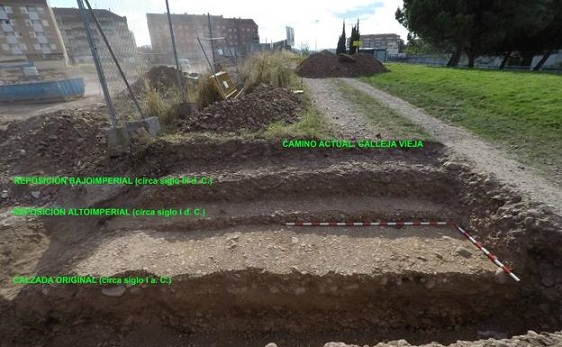

|
LA RIOJA ROMANA La relación de los romanos
con los pueblos indigenas de La Rioja se establecía mediante pactos comerciales
y militares. Tras la
caída de Numancia y la derrota de los celtíberos llegó la plena romanización. La
romanización acabó con las estructuras sociales,
económicas y culturales de los pueblos indígenas, estableciendo el
un nuevo orden dirigido desde Tarraco. Los romanos aprovecharon los poblados ya existían
para organizar el territorio, y levantaron sus poblaciones en lugares próximos a
las ya existentes. Este es el caso de Vareia, Calagurris y Tritium. Las principales restos romanos se hallan en: Alfaro, Graccurris, el primer establecimiento romano en el Valle del Ebro. Del siglo I, se conserva un Ninfeo romano.
Calahorra, Calagurris y Iula Nassica, desde la pax Augusta, fue municipio de derecho, se conservan restos de sus acueductos, cloacas, termas y un circo.
Varea, Vareia, una de las ciudades romanas donde se han encontrado numerosos restos; monedas, cerámica y el famoso broche vareyense de oro y plata. Tricio, Tritium Magallum, fue un centro alfarero que distribuyó las vasijas de terrasigillata por todo el imperio romano. La ciudad romana de Tritium se levantaba en el cerro donde actualmente se ubica la localidad de Tricio.
Libia, población cuyos restos se localizan entre Herramélluri y Grañón.
Aguilar del Río Alhama, Contrebia Leucade. Ciudad celtibero - romana.
De los puentes destacan el Puente Mantible sobre el río Ebro, a unos siete kilómetros de Logroño, en dirección a Asa y el Puente de Cihuri puente romano del siglo II, remodelado en época medieval, sobre el río Tirón en el barrio del Priorato.
La calzada más importante era la del Valle del Ebro, que discurría de Zaragoza a Briviesca. Desde la calzada del Ebro partían otras secundarias que comunicaban con Numancia a través de los valles de los ríos Iregua, Najerilla, Leza, Cidacos y Alhama. Un tramo de 35 kilómetros de la Calzada romana de Varea a Numancia, entre Torrecilla en Cameros y Piqueras, se ha recuperado y acondicionado para uso de senderismo.
El yacimiento romano de La Morlaca en Villamediana de Iregua, Una villa romana de época bajoimperial, de entre los siglos III y IV, aunque se ha hallado un muro altoimperial que podría ser del siglo I, por lo que se baraja la posibilidad de una reconstrucción del espacio por sus ocupantes.
En Logroño, en el barrio de La Estrella en septiembre de 2020, se ha hallado un tramo de la calzada romana del Ebro entre Varea y Tricio, concretamente de la recta hasta el monte de La Pila, en perfecto estado de conservación. Foto: www.larioja.com

En La Rioja nivel escultórico destacamos:
Restos cerámicos se han hallado en los alfares de Tricio, Bezares, Arenzana de Arriba y Nájera donde se “terra sigillata”. En el yacimiento de cerámica en La Maja, que actualmente se está investigando, han aparecido vestigios de fabricación de vidrio.
|